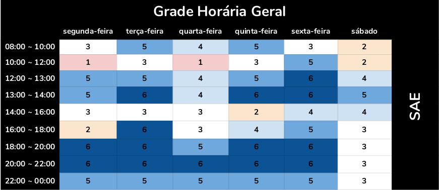

Planejamento
Planejamento
O planejamento é uma ferramenta administrativa, que possibilita perceber a realidade, avaliar os caminhos, construir um referencial futuro, o trâmite adequado e reavaliar todo o processo a que o acoplamento se destina
Introdução
O Planejamento consiste da preparação, organização e estruturação do projeto. É essencial na tomada de decisões e execução dessas mesmas tarefas. Posteriormente, o planejamento também a confirmação se as decisões tomadas foram acertadas. Portanto, o planejamento serve para auxilar o grupo a se organizar nas tarefas que serão propostas durante o projeto, de acordo com as respectivas datas de entrega. {style="padding: 10px 0 15px 0;"}
Heatmap

Cronograma
A seguir, estão descritas todas as datas importantes de entrega da equipe moldado no plano de ensino da matéria. Para cada ponto de controle, estão definidas ao menos duas reuniões presenciais, à priori marcadas para acontecer no sábado, mas que podem ser remarcadas caso seja necessário. Além disso, reuniões à distância ocorrerão sob demanda, conforme for necessário para o desenvolvimento do projeto. É importante salientar também que o cronograma está sujeito a mudanças que, caso ocorram, serão rastreadas no versionamento da página. {style="padding: 10px 0 15px 0;"}
| Pontos | Data | Descrição |
|---|---|---|
| Ponto de Controle 1 | 21/09 | Planejamento do Projeto, equipe, litas de sites avaliados, site selecionado para o projeto da disciplina, Ferramentas do projeto, Processo de Design, cronograma das atividades |
| Ponto de Controle 2 | 05/10 | Perfil do usuário, Personas e Análise de tarefas |
| Ponto de Controle 3 | 15/10 | Princípios Gerais de Projeto, Metas de usabilidade, Guia de Estilo. (Fase: análise de requisitos) |
| Ponto de Controle 4 | 29/10 | Planejamento da Avaliação e do relato dosresultados da avaliação do Storyboard e Análise de tarefas. |
| Ponto de Controle 5 | 05/11 | Planejamento da Avaliação e o relato dos resultados da avaliação do Storyboard e Protótipo de Papel. |
| Ponto de Controle 5 | 19/11 | Planejamento da Avaliação e o relato dos resultados da avaliação do protótipo de alta fidelidade. |
| Ponto de Controle 6 | 26/11 | Entrega da apresentação do projeto final |
Ferramentas Utilizadas
| Ferramenta | Nome | Descrição |
|---|---|---|
| ZenHub | Subsistema no GitHub que permite gestão ágil do projeto/grupo com interface KanBan | |
| Github | Plataforma que será utilizada para gerir e unificar aquilo que o grupo desenvolver | |
| Google Drive | Plataforma para permitir a edição simultânea de arquivos por todos do grupo | |
| Telegram | Ferramenta de comunicação para avisos gerais, marcar datas de reunião, entre outros | |
| Figma | Ferramenta de comunicação para avisos gerais, marcar datas de reunião, entre outros | |
| Draw.io | É um editor gráfico online no qual é possível desenvolver desenhos, gráficos e outros sem a necessidade de usar um software caro e pesado. |
Versionamento
| Data | Versão | Descrição | Autor |
|---|---|---|---|
| 20/09/2020 | 1.0 | Adição dos planejamento, heatmap, cronograma e ferramentas | Fellipe, Rafael, Itallo |
| 14/10/2020 | 1.1 | Adição da ferramenta Figma | Gabriel Paiva e Murilo Gomes |
| 30/10/2020 | 1.2 | Adição da ferramenta Draw Io e versionamento, mudança no heatmap | Rafael |
Interação Humano-Computador 2020 SAE Github. All rights reserved.